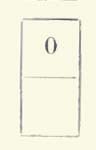
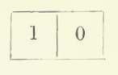
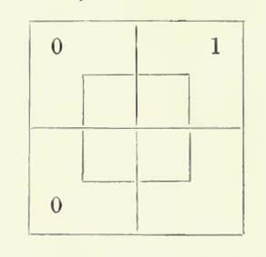

This edition of Lewis Carroll's The Game of Logic has been designed with the design concerns
of Charles Dodgson (the man behind the Lewis Carroll nom de plume) in mind. The gold title in the header and the red background are taken from the cover of the book (and the title is off center, as
Dodgson specified it ought to be). The pink and grey elements used in the site are a reflection of the colors of the cardboard game pieces that came with the book, the colors of which were so important
to Dodgson that he took over the production of the pieces from his publisher and found and employed his own manufacturer.
This edition, thus far, includes the text of the first of three chapters, as well as the preface, game diagram, and the prefatory poem "To my Child-Friend." Though I have used the 1886 edition as the copy-text, all scanned images come from the 1887. This reflects Dodgson's decision to reprint due to problems with print
and paper quality in the 1886 edition. I have extrapolated that he would have preferred the print quality of the 1887, thus those are the printed images
I have chosen to reproduce. See the "Note on the Text" for more information.
How to use this edition
Editorial emendations to the copy-text are included as notes in the text. All emendations are marked in pink. Notes may be viewed by hovering the cursor
over red text. The notes appear as below.
Edition abbreviations:
- 86 refers to Macmillan and Co. 1886 (First ed., suppressed in England, some copies sold in America)
- 87 refers to Macmillan and Co. 1887 (Second ed., first ed. for sale in England)
In the present edition, all emendations come from the 1887, so the repetition of the source of emendation in each note may seem unnecessary.
But I have elected to employ a system that allows for extensibility in the future. If, for instance, manuscript materials come to light that demand
further emendations, the present system of notation will still be usable, and the current notes will not require any updating.
For further information, a complete historical collation is available as a pdf.
To my Child-Friend.
I charm in vain : for never again,
All keenly as my glance I bend,
Will Memory, goddess coy,
Embody for my joy
Departed days, nor let me gaze
On thee, my Fairy Friend !
Yet could thy face, in mystic grace,
A moment smile on me, 'twould send
Far-darting rays of light
From Heaven athwart the night,
By which to read in very deed
Thy spirit, sweetest Friend !
So may the stream of Life's long dream
Flow gently onward to its end,
With many a floweret gay,
Adown its willowy way :
May no sigh vex, no care perplex,
My loving little Friend !
PREFACE.
“There foam'd rebellious Logic, gagg'd and bound.”
THIS Game requires nine Counters—four of one colour and five
of another: say four red and five grey.
Besides the nine Counters, it also requires one Player, at least. I am
not aware of any Game that can be played with less than this number:
while there are several that require more: take Cricket, for instance,
which requires twenty-two. How much easier it is, when you want to play
a Game, to find one Player than twenty-two! At the same time, though
one Player is enough, a good deal more amusement may be got by two
working at it together, and correcting each other's mistakes.
A second advantage, possessed by this Game, is that, besides being
an endless source of amusement (the number of arguments, that may be
worked by it, being infinite), it will give the Players a little instruction as
well. But is there any great harm in that, so long as you get plenty of
amusement?
CHAPTER I.
NEW LAMPS FOR OLD.
“Light come, light go.”
§ 1. Propositions.
There are three ‘Propositions’ for you——the only three kinds we are going
to use in this Game: and the first thing to be done is to learn how to express them
on the Board.
Let us begin with
“Some new Cakes are nice.”
But, before doing so, a remark has to be made——one that is rather
important, and by no means easy to understand all in a moment: so
please to read this very carefully.
The world contains many Things (such as “Buns”, “Babies”, “Beetles”, “Battledores”, &c.); and these Things possess many Attributes
(such as “baked”, “beautiful”, “black”, “broken”, &c.: in fact, whatever can
be “attributed to”, that is “said to belong to”, any Thing, is an Attribute).
Whenever we wish to mention a Thing, we use a Substantive: when
we wish to mention an Attribute, we use an Adjective. People have
asked the question “Can a Thing exist without any Attributes belonging
to it?” It is a very puzzling question, and I'm not going to try to answer
it: let us turn up our noses, and treat it with contemptuous silence, as
if it really wasn't worth noticing. But, if they put it the other way, and
ask “Can an Attribute exist without any Thing for it to belong to?”, we
may say at once “No: no more than a Baby could go a railway-journey
with no one to take care of it!” You never saw “beautiful” floating about
in the air, or littered about on the floor, without any Thing to be beautiful,
now did you?
And now what am I driving at, in all this long rigmarole? It is this.
You may put “is” or “are” between the names of two Things (for example, “some
Pigs are fat Animals”), or between the names of two Attributes
(for example, “pink is light-red”), and in each case it will make good
sense. But, if you put “is” or “are” between the name of a Thing and
the name of an Attribute (for example, “some Pigs are pink”), you do
not make good sense (for how can a Thing be an Attribute?) unless
you have an understanding with the person to whom you are speaking.
And the simplest understanding would, I think, be this——that the
Substantive shall be supposed to be repeated at the end of the
sentence, so that the sentence, if written out in full, would be “some
Pigs are pink (Pigs)”. And now the word “are” makes quite good sense.
Thus, in order to make good sense of the Proposition “some new
Cakes are nice”, we must suppose it to be written out in full, in the form
“some new Cakes are nice (Cakes)”. Now this contains two ‘Terms’——
“new Cakes” being one of them, and “nice (Cakes)” the other. “New
Cakes,” being the one we are talking about, is called the ‘Subject’ of
the Proposition, and “nice (Cakes)” the ‘Predicate’. Also this
Proposition is said to be a ‘Particular’ one, since it does not speak
of the whole of its Subject, but only of a part of it. The other two kinds
are said to be ‘Universal’, because they speak of the whole of their
Subjects——the one denying niceness, and the other asserting it, of the
whole class of “new Cakes”. Lastly, if you would like to have a definition
of the word ‘Proposition’ itself, you may take this:—“a sentence stating
that some, or none, or all, of the Things belonging to a certain class,
called its ‘Subject’, are also Things belonging to a certain other class,
called its ‘Predicate’”.
You will find these seven words——Proposition, Attribute, Term,
Subject, Predicate, Particular, Universal——charmingly useful, if any
friend should happen to ask if you have ever studied Logic. Mind you
bring all seven words into your answer, and your friend will go away
deeply impressed——‘a sadder and a wiser man’.
Now please to look at the smaller Diagram on the Board, and
suppose it to be a cupboard, intended for all the Cakes in the world (it would
have to be a good large one, of course). And let us suppose all the new ones
to be put into the upper half (marked ‘x’), and all the rest (that is, the
not-new ones) into the lower half (marked ‘x′’). Thus the lower half would
contain elderly Cakes, aged Cakes, ante-diluvian Cakes——if there are
any: I haven't seen many myself——and so on. Let us also suppose all
the nice Cakes to be put into the left-hand half (marked ‘y’), and all the
rest (that is, the not-nice ones) into the right-hand half (marked ‘y′’). At
present, then, we must understand x to mean “new”, x′ “not-new”, y
“nice, and y′ “not-nice.”
And now what kind of Cakes would you expect to find in
compartment No. 5?
It is part of the upper half, you see; so that, if it has any Cakes in it,
they must be new: and it is part of the left-hand half; so that they
must be nice. Hence, if there are any Cakes in this compartment, they
must have the double ‘Attribute’ “new and nice”: or, if we use letters,
they must be “xy.”
Observe that the letters x, y are written on two of the edges
of this compartment. This you will find a very convenient rule for knowing
what Attributes belong to the Things in any compartment. Take No. 7,
for instance. If there are any Cakes there, they must be “x′y”, that is,
they must be “not-new and nice.”
Now let us make another agreement——that a red counter in a
compartment shall mean that it is ‘occupied’, that is, that there are
some Cakes in it. (The word ‘some,’ in Logic, means ‘one or more’: so
that a single Cake in a compartment would be quite enough reason for
saying “there are some Cakes here”). Also let us agree that a grey
counter in a compartment shall mean that it is ‘empty’, that is, that
there are no Cakes in it. In the following Diagrams, I shall put ‘1’
(meaning ‘one or more’) where you are to put a red counter, and ‘0’
(meaning ‘none’) where you are to put a grey one.
As the Subject of our Proposition is to be “new Cakes”, we are only
concerned, at present, with the upper half of the cupboard, where all
the Cakes have the attribute x, that is, “new.”
Now, fixing our attention on this upper half, suppose we found it
marked like this,
that is, with a red counter in No. 5. What would this tell us, with regard
to the class of “new Cakes”?
Would it not tell us that there are some of them in the
xy-compartment? That is, that some of them (besides having the
Attribute x, which belongs to both compartments) have the Attribute
y (that is, “nice”). This we might express by saying “some x-Cakes
are y-(Cakes)”, or, putting words instead of letters,
“Some new Cakes are nice (Cakes)”,
or, in a shorter form,
“Some new Cakes are nice”.
At last we have found out how to represent the first Proposition of this
Section. If you have not clearly understood all I have said, go no further,
but read it over and over again, till you do understand it. After that is
once mastered, you will find all the rest quite easy.
It will save a little trouble, in doing the other Propositions, if we
agree to leave out the word “Cakes” altogether. I find it convenient to call the
whole class of Things, for which the cupboard is intended, the ‘Universe.’
Thus we might have begun this business by saying “Let us take a
Universe of Cakes.” (Sounds nice, doesn't it?)
Of course any other Things would have done just as well as Cakes.
We might make Propositions about “a Universe of Lizards”, or even “a
Universe of Hornets”. (Wouldn't that be a charming Universe to live in?)
So far, then, we have learned that
means “some x are y,” i. e. “some new are nice.”
I think you will see, without further explanation, that
means “some x are y′,” i. e. “some new are not-nice.”
Now let us put a grey counter into No. 5, and ask ourselves the meaning of
This tells us that the xy-compartment is empty, which we may express by
“no x are y”, or, “no new Cakes are nice”. This is the second of the three
Propositions at the head of this Section.
In the same way,
would mean “no x are y′,” or, “no new Cakes are not-nice.”
What would you make of this, I wonder?
I hope you will not have much trouble in making out that this represents
a double Proposition: namely, “some x are y, and some are y′,
i. e. “some new are nice,and some are not-nice.”
The following is a little harder, perhaps:—
This means “no x are y, and none are y′,” i. e. “no new are nice, and
none are not-nice”: which leads to the rather curious result that “no new exist,” i. e. “no Cakes are new.” This is because “nice” and
“not-nice” make what we call an ‘exhaustive’ division of the class “new
Cakes”: i. e., between them, they exhaust the whole class, so that all
the new Cakes, that exist, must be found in one or the other of them.
And now suppose you had to represent, with counters, the
contradictory to “no Cakes are new”, which would be “some Cakes are new”, or, putting letters for words, “some Cakes are x”, how would you
do it?
This will puzzle you a little, I expect. Evidently you must put a red
counter somewhere in the x-half of the cupboard, since you know
there are some new Cakes. But you must not put it into the left-hand
compartment, since you do not know them to be nice: nor may you put it into
the right-hand one, since you do not know them to be not-nice.
What, then, are you to do? I think the best way out of the
difficulty is to place the red counter on the division-line between the
xy-compartment and the xy′-compartment. This I shall represent (as
I always put ‘1’ where you are to put a red counter) by the diagram
Our ingenious American cousins have invented a phrase to express
the position of a man who wants to join one or the other of two parties——
such as their two parties ‘Democrats’ and ‘Republicans’——but ca'n't
make up his mind which. Such a man is said to be “sitting on the fence.”
Now that is exactly the position of the red counter you have just placed on
the division-line. He likes the look of No. 5, and he likes the look of No. 6,
and he doesn't know which to jump down into. So there he sits astride,
silly fellow, dangling his legs, one on each side of the fence!
Now I am going to give you a much harder one to make out. What
does this mean?

This is clearly a double Proposition. It tells us, not only that “some x are
y,” but also that “no x are not y.” Hence the result is “all x are y,” i. e.
“all new Cakes are nice”, which is the last of the three Propositions at the
head of this Section.
We see, then, that the Universal Proposition
“All new Cakes are nice”
consists of two Propositions taken together, namely,
“Some new Cakes are nice,”
and “No new Cakes are not-nice.”
In the same way
would mean “all x are y′”, that is,
“All new Cakes are not-nice.”
Now what would you make of such a Proposition as “The Cake you have
given me is nice”? Is it Particular, or Universal?
“Particular, of course,” you readily reply. “One single Cake is hardly worth
calling ‘some,’ even.”
No, my dear impulsive Reader, it is ‘Universal’. Remember that, few
as they are (and I grant you they couldn't well be fewer), they are (or rather
'it is’) all that you have given me! Thus, if (leaving ‘red’ out of the
question) I divide my Universe of Cakes into two classes——the Cakes
you have given me (to which I assign the upper half of the cupboard),
and those you haven't given me (which are to go below)——I find the
lower half fairly full, and the upper one as nearly as possible empty. And
then, when I am told to put an upright division into each half, keeping the
nice Cakes to the left, and the not-nice ones to the right, I begin
by carefully collecting all the Cakes you have given me (saying to myself,
from time to time, “Generous creature! How shall I ever repay such
kindness?”), and piling them up in the left-hand compartment. And it
doesn't take long to do it!
Here is another Universal Proposition for you. “Barzillai Beckalegg
is an honest man.” That means “All the Barzillai Beckaleggs, that I am
now considering, are honest men.” (You think I invented that name, now
don't you? But I didn't. It's on a carrier's cart, somewhere down in Cornwall.)
This kind of Universal Proposition (where the Subject is a single Thing) is
called an ‘Individual’ Proposition.
Now let us take “nice Cakes” as the Subject of our Proposition:
that is, let us fix our thoughts on the left-hand half of the cupboard, where
all the Cakes have the attribute y, that is, “nice.”
Suppose we find it marked like this:—
What would that tell us?
I hope that it is not necessary, after explaining the horizontal
oblong so fully, to spend much time over the upright one. I hope you will
see, for yourself, that this means “some y are x”, that is,
“Some nice Cakes are new.”
“But,” you will say, “we have had this case before. You put a red
counter into No. 5, and you told us it meant ‘some new Cakes are nice’; and
now you tell us that it means ‘some nice Cakes are new’! Can it mean
both?”
The question is a very thoughtful one, and does you great credit,
dear Reader! It does mean both. If you choose to take x (that is, “new
Cakes”) as your Subject, and to regard No. 5 as part of the horizontal oblong, you
may read it “some x are y”, that is “some new Cakes are nice”: but, if
you choose to take y (that is, “nice Cakes”) as your Subject, and to regard
No. 5 as part of an upright oblong, then you may read it “some y are x”, that is, “some nice Cakes are new”. They are merely two different ways
of expressing the very same truth.
Without more words, I will simply set down the other ways in which
this upright oblong might be marked, adding the meaning in each case. By
comparing them with the various cases of the horizontal oblong, you will, I
hope, be able to understand them clearly.
| Symbols. |
Meanings. |
|
|
Some y are x′;
i. e. Some nice are not-new.
|
|

|
No y are x;
i. e. No nice are new.
[Observe that this is merely another way of expressing “No new are nice.”]
|
|
|
No y are x′;
i. e. No nice are not-new.
|
|
|
Some y are x, and some are x′;
i. e. Some nice are new, and some are not-new.
|
|
|
No y are x, and none are x′; i. e. No y exist;
i. e. No Cakes are nice.
|
|
|
All y are x;
i. e. All nice are new.
|
|
|
All y are x′;
i. e. All nice are not-new.
|
You will find it a good plan to examine yourself on this table, by covering
up first one column and then the other, and ‘dodging about’, as the children say.
Also you will do well to write out for yourself two other tables——one for
the lower half of the cupboard, and the other for its right-hand half.
And now I think we have said all we need to say about the smaller
Diagram, and may go on to the larger one.
This may be taken to be a cupboard divided in the same way as the last,
but also divided into two portions, for the Attribute m. Let us give to m
the meaning “wholesome”: and let us suppose that all wholesome Cakes
are places inside the central Square, and all the unwholesome ones outside
it, that is, in one or other of the four queer-shaped outer compartments.
We see that, just as, in the smaller Diagram, the Cakes in each
compartment had two Attributes, so, here, the Cakes in each compartment
have three Attributes: and, just as the letters, representing the two
Attributes, were written on the edges of the compartment, so, here, they
are written at the corners. (Observe that m′ is supposed to be written at
each of the four outer corners.) So that we can tell in a moment, by looking
at a compartment, what three Attributes belong to the Things in it. For
instance, take No. 12. Here we find x, y′, m, at the corners: so we know
that the Cakes in it, if there are any, have the triple Attribute, ‘xy′m’, that is
“new, not-nice, and wholesome.” Again, take No. 16. Here we find, at the
corners, x′, y′, m′: so the Cakes in it are “not-new, not-nice, and
unwholesome.” (Remarkably untempting Cakes!)
It would take far too long to go through all the Propositions,
containing x and y, x and m, and y and m, which can be represented on
this diagram (there are ninety-six altogether, so I am sure you will excuse
me!) and I must content myself with doing two or three, as specimens. You
will do well to work out a lot more for yourself.
Taking the upper half by itself, so that our Subject is “new Cakes”, how
are we to represent “no new Cakes are wholesome”?
This is, writing letters for words, “no x are m.” Now this tells us that
none of the Cakes, belonging to the upper half of the cupboard, are to be found
inside the central Square: that is, the two compartments, No. 11 and No. 12
are empty. And this, of course, is represented by
And now how are we to represent the contradictory Proposition “some x
are m”? This is a difficulty I have already considered. I think the best way is to
place a red counter on the division-line between No. 11 and No. 12, and to
understand this to mean that one of the two compartments is ‘occupied,’ but
that we do not at present know which. This I shall represent thus:—
Now let us express “all x are m.”
This consists, we know, of two Propositions,
“Some x are m,”
and “No x are m′.”
Let us express the negative part first. This tells us that none of the
Cakes, belonging to the upper half of the cupboard, are to be found outside
the central Square: that is, the two compartments, No. 9 and No. 10, are empty.
This, of course, is represented by
But we have yet to represent “Some x are m.” This tells us that there are
some Cakes in the oblong consisting of No. 11 and No. 12: so we place our
red counter, as in the previous example, on the division-line between No. 11
and No. 12, and the result is
Now let us try one or two interpretations.
What are we to make of this, with regard to x and y?
This tells us, with regard to the xy′-Square, that it is wholly ‘empty’,
since both compartments are so marked. With regard to the xy-Square, it
tells us that it is ‘occupied’. True, it is only one compartment of it that is so
marked; but that is quite enough, whether the other be ‘occupied’ or ‘empty’,
to settle the fact that there is something in the Square.
If, then, we transfer our marks to the smaller Diagram, so as to get rid
of the m-subdivisions, we have a right to mark it

which means, you know, “all x are y.”
The result would have been exactly the same, if the given oblong had
been marked thus:—
Once more: how shall we interpret this, with regard to x and y?
This tells us, as to the xy-Square, that one of its compartments is
‘empty’. But this information is quite useless, as there is no mark in the other
compartment. If the other compartment happened to be ‘empty’ too, the Square
would be ‘empty’: and, if it happened to be ‘occupied’, the Square would be
‘occupied’. So, as we do not know which is the case, we can say nothing
about this Square.
The other Square, the xy′-Square, we know (as in the previous example)
to be ‘occupied’.
If, then, we transfer our marks to the smaller Diagram, we get merely this:—
which means, you know, “some x are y′.”
These principles may be applied to all the other oblongs. For instance,
to represent “all y′ are m′” we should mark the right-hand upright oblong
(the one that has the attribute y′) thus:—
and, if we were told to interpret the lower half of the cupboard, marked as
follows, with regard to x and y,
we should transfer it to the smaller Diagram thus,
and read it “all x′ are y.”
Two more remarks about Propositions need to be made.
One is that, in every Proposition beginning with “some” or “all”, the
actual existence of the ‘Subject’ is asserted. If, for instance, I say “all misers
are selfish,” I mean that misers actually exist. If I wished to avoid making this
assertion, and merely to state the law that miserliness necessarily involves
selfishness, I should say “no misers are unselfish” which does not assert that
any misers exist at all, but merely that, if any did exist, they would be selfish.
The other is that, when a Proposition begins with “some” or “no”, and
contains more than two Attributes, these Attributes may be re-arranged, and
shifted from one Term to the other, ad libitum. For example, “some abc are def”
may be re-arranged as “some bf are acde,” each being equivalent to “some Things are abcdef”. Again “No wise old men are rash and reckless gamblers” may be re-arranged as “No rash old gamblers are wise and reckless,” each
being equivalent to “No men are wise old rash reckless gamblers.”
§ 2. Syllogisms.
Now suppose we divide our Universe of Things in three ways, with regard
to three different Attributes. Out of these three Attributes, we may make up
three different couples (for instance, if they were a, b, c, we might make up
the three couples ab, ac, bc). Also suppose we have two Propositions given
us, containing two of these three couples, and that from them we can prove
a third Proposition containing the third couple. (For example, if we divide our
Universe for m, x, and y; and if we have the two Propositions given us, “no
m are x′” and “all m′ are y”, containing the two couples mx and my, it
might be possible to prove from them a third Proposition, containing x and y.)
In such a case we call the given Propositions ‘the Premisses’, the third one
‘the Conclusion’, and the whole set ‘a Syllogism’.
Evidently, one of the Attributes must occur in both Premisses; or else one
must occur in one Premiss, and its contradictory in the other.
In the first case (when, for example, the Premisses are “some m
are x” and no m are y′”) the Term, which occurs twice, is called ‘the Middle Term’, because it serves as a sort of link between the other two Terms.
In the second case (when, for example, the Premisses are “no m are
x′” and “all m′ are y”) the two Terms, which contain these contradictory
Attributes, may be called ‘the Middle Terms’.
Thus, in the first case, the class of “m-Things” is the Middle Term;
and, in the second case, the two classes of “m-Things” and“m′-Things” are the Middle Terms.
The Attribute, which occurs in the Middle Term or Terms, disappears
in the Conclusion, and it is said to be “eliminated”, which literally means
“turned out of doors”.
Now let us try to draw a Conclusion from the two Premisses—
|
“Some new Cakes are unwholesome;
No nice Cakes are unwholesome.”
|
}
|
In order to express them with counters, we need to divide Cakes in
three different ways, with regard to newness, to niceness, and to
wholesomeness. For this we must use the larger Diagram, making x mean
“new”, y “nice”, and m “wholesome”. (Everything inside the central Square
is supposed to have the attribute m, and everything outside it the attribute
m′, i. e. “not-m”.)
You had better adopt the rule of making m mean the Attribute which
occurs in the Middle Term or Terms. (I have chosen m as the symbol,
because ‘middle’ begins with ‘m’.)
Now, in representing the two Premisses, I prefer to begin with the
negative one (the one beginning with “no”), because grey counters
can always be placed with certainty, and will then help to fix the position
of the red counters, which are sometimes a little uncertain where they will be
most welcome.
Let us express, then “no nice Cakes are unwholesome (Cakes)”, i. e. “no y-Cakes are m′-(Cakes)”. This tells us that none of the Cakes
belonging to the y-half of the cupboard are in its m′ compartments (i. e. the
ones outside the central Square). Hence the two compartments, No. 9 and
No. 15, are both ‘empty’; and we must place a grey counter in each of them,
thus:—
We have now to express the other Premiss, namely, “some new Cakes
are unwholesome (Cakes)”, i. e. “some x-Cakes are m′-(Cakes)”. This tells us
that some of the Cakes in the x-half of the cupboard are in its m′-compartments.
Hence one of the two compartments, No. 9 and No. 10, is ‘occupied’: and, as
we are not told in which of these two compartments to place the red counter, the
usual rule would be to lay it on the division-line between them: but, in this case,
the other Premiss has settled the matter for us, by declaring No. 9 to be empty.
Hence the red counter has no choice, and must go into No. 10, thus:—

And now what counters will this information enable us to place in the
smaller Diagram, so as to get some Proposition involving x and y only, leaving
out m? Let us take its four compartments, one by one.
First, No. 5. All we know about this is that its outer portion is empty: but
we know nothing about its inner portion. Thus the Square may be empty, or it may
have something in it. Who can tell? So we dare not place any counter in this Square.
Secondly, what of No. 6? Here we are a little better off. We know that there
is something in it, for there is a red counter in its outer portion. It is true we do not
know whether its inner portion is empty or occupied: but what does that matter?
One solitary Cake, in one corner of the Square, is quite sufficient excuse for
saying “this Square is occupied”, and for marking it with a red counter.
As to No. 7, we are in the same condition as with No. 5——we find it
partly ‘empty’, but we do not know whether the other part is empty or occupied:
so we dare not mark this Square.
And as to No. 8, we have simply no information at all.
The result is
Our ‘Conclusion’, then, must be got out of the rather meagre piece of
information that there is a red counter in the xy′-Square. Hence our Conclusion
is “some x are y′”, i. e. “some new Cakes are not-nice (Cakes)”: or, if you
prefer to take y′ as your Subject, “some not-nice Cakes are new (Cakes)”;
but the other looks neatest.
We will now write out the whole Syllogism, putting the symbol ∴ for “therefore”, and omitting “Cakes”, for the sake of brevity, at the end of each Proposition.
|
“Some new Cakes are unwholesome;
No nice Cakes are unwholesome.
|
}
|
|
∴Some new Cakes are not-nice.”
|
And you have now worked out, successfully, your first ‘Syllogism’. Permit
me to congratulate you, and to express the hope that it is but the beginning of a
long and glorious series of similar victories!
We will work out one other Syllogism——a rather harder one than the
last——and then, I think, you may be safely left to play the Game by yourself,
or (better) with any friend whom you can find, that is able and willing to take a
share in the sport.
Let us see what we can make of the two Premisses—
|
“All Dragons are uncanny;
All Scotchmen are canny.”
|
}
|
Remember, I don't guarantee the Premisses to be facts. In the first place,
I never even saw a Dragon: and, in the second place, it isn't of the slightest
consequence to us, as Logicians, whether our Premisses are true or false: all we
have to do is to make out whether they lead logically to the Conclusion, so that,
if they were true, it would be true also.
You see, we must give up the “Cakes” now, or our cupboards will be of no
use to us. We must take, as our ‘Universe’, some class of things which will include
’Dragons and
men: shall we say ‘Animals'? And, as “canny” is evidently the
Attribute belonging to the ‘Middle Terms’, we will let m stand for “canny”, x for
“Dragons”, and y for “Scotchmen”. So that our two Premisses are, in full,
|
“All Dragon-Animals are uncanny (Animals);
All Scotchman-Animals are canny (Animals).”
|
}
|
And these may be expressed, using letters for words, thus:—
|
“All x are m′;
All y are m.”
|
}
|
The first Premiss consists, as you already know, of two parts:—
“Some x are m′,”
and “No x are m.”
And the second also consists of two parts:—
“Some y are m,”
and “No y are m′.”
Let us take the negative portions first.
We have, then, to mark, on the larger Diagram, first, “no x are m”, and secondly,
“no y are m′”. I think you will see, without further explanation, that the two
results, separately, are
and that these two, when combined, give us
We have now to mark the two positive portions, “some x are m′” and “some y are m”.
The only two compartments, available for Things which are xm′, are No. 9
and No. 10. Of these, No. 9 is already marked as ‘empty’; so our red counter must
go into No. 10.
Similarly, the only two, available for ym, are No. 11 and No. 13. Of these,
No. 11 is already marked as ‘empty’; so our red counter must go into No. 13.
The final result is

And now how much of this information can usefully be transferred to the
smaller Diagram?
Let us take its four compartments, one by one.
As to No. 5? This, we see, is wholly ‘empty’. (So mark it with a grey counter.)
As to No. 6? This, we see, is ‘occupied’. (So mark it with a red counter.)
As to No. 7? Ditto, ditto.
As to No. 8? No information.
The smaller Diagram is now pretty liberally marked:—
And now what Conclusion can we read off from this? Well, it is impossible
to pack such abundant information into one Proposition: we shall have to indulge
in two, this time.
First, by taking x as Subject, we get “all x are y′”, that is,
“All Dragons are not-Scotchmen”:
secondly, by taking y as Subject, we get “all y are x′”, that is,
“All Scotchmen are not-Dragons”.
Let us now write out, all together, our two Premisses and our brace of Conclusions.
|
“All Dragons are uncanny;
All Scotchmen are canny.
|
}
|
|
∴{
|
All Dragons are not-Scotchmen;
All Scotchmen are not-Dragons.”
|
Let me mention, in conclusion, that you may perhaps meet with logical
treatises in which it is not assumed that any Thing exists at all, but “some x are y”
is understood to mean “the Attributes x, y are compatible, so that a Thing can
have both at once”, and “no x are y” to mean “the Attributes x, y are
incompatible, so that nothing can have both at once”.
In such treatises, Propositions have quite different meanings from
what they have in our ‘Game of Logic’, and it will be well to understand exactly
what the difference is.
First take “some x are y”. Here we understand “are” to mean “are,
as an actual fact”——which of course implies that some x-Things exist. But
they (the writers of these other treatises) only understand “are” to mean“can
be”, which does not at all imply that any exist. So they mean less than we do:
our meaning includes theirs (for of course “some x are y” includes “some x can
be y”), but theirs does not include ours. For example, “some Welsh hippopotami
are heavy” would be true, according to these writers (since the Attributes “Welsh
” and “heavy” are quite compatible in a hippopotamus), but it would be false in our
Game (since there are no Welsh hippopotami to be heavy).
Secondly, take “no x are y”. Here we only understand “are” to mean
“are, as an actual fact”——which does not at all imply that no x can be y. But
they understand the Proposition to mean, not only that none are y, but that none
can possibly be y. So they mean more than we do: their meaning includes
ours (for of course “no x can be y” includes “no x are y”), but ours does not
include theirs. For example, “no Policemen are eight feet high” would be true in
our Game (since, as an actual fact, no such splendid specimens are ever found), but
it would be false, according to these writers (since the Attributes “belonging to the
Police Force” and “eight feet high” are quite compatible: there is nothing to prevent
a Policeman from growing to that height, if sufficiently rubbed with Rowland's Macassar
Oil——which is said to make hair grow, when rubbed on hair, and so of course will
make a Policeman grow, when rubbed on a Policeman).
Thirdly, take “all x are y”, which consists of the two partial Propositions
“some x are y” and “no x are y′”. Here, of course, the treatises mean less
than we do in the first part, and more than we do in the second. But the two
operations don't balance each other——any more than you can console a man, for having
knocked down one of his chimneys, by giving him an extra door-step.
If you meet with Syllogisms of this kind, you may work them, quite easily, by
the system I have given you: you have only to make ‘are’ mean ‘are capable of being’,
and all will go smoothly. For “some x are y” will become “some x are capable of
being y”, that is, “the Attributes x, y are compatible”. And “no x are y” will
become “no x are capable of
being y”, that is, “the Attributes x, y are incompatible”.
And, of course, “all x are y” will become “some x are capable of being y, and none
are capable of being y′”, that is, “the Attributes x, y are compatible, and the Attributes x, y′ are incompatible.” In using the Diagrams for this system, you must
understand a red counter to mean “there may possibly be something in this
compartment,” and a grey one to mean “there cannot possibly be anything in this
compartment.”
§ 3. Fallacies.
And so you think, do you, that the chief use of Logic, in real life, is to deduce
Conclusions from workable Premisses, and to satisfy yourself that the Conclusions,
deduced by other people, are correct? I only wish it were! Society would be much
less liable to panics and other delusions, and political life, especially, would be a
totally different thing, if even a majority of the arguments, that are scattered broadcast
over the world, were correct! But it is all the other way, I fear. For one workable Pair
of Premisses (I mean a Pair that lead to a logical Conclusion) that you meet with in
reading your newspaper or magazine, you will probably find five that lead to no
Conclusion at all: and, even when the Premisses are workable, for one instance,
where the writer draws a correct Conclusion, there are probably ten where he draws
an incorrect one.
In the first case, you may say “the Premisses are fallacious”: in the second,
“the Conclusion is fallacious.”
The chief use you will find, in such Logical skill as this Game may teach you,
will be detecting ‘Fallacies’ of these two kinds.
The first kind of Fallacy——‘Fallacious Premisses’——you will detect when, after marking them on the larger Diagram, you try
to transfer the marks to the smaller. You will take its four compartments, one by one,
and ask for each in turn, “What mark can I place here?”; and in every one the answer
will be “No information!”, showing that there is no Conclusion at all. For instance,
|
“All soldiers are brave;
Some Englishmen are brave.
|
}
|
|
∴Some Englishmen are soldiers.”
|
looks uncommonly like a Syllogism, and might easily take in a less experienced
Logician. But you are not to be caught by such a trick! You would simply set out the
Premisses, and would then calmly remark “Fallacious Premisses!”: you wouldn't
condescend to ask what Conclusion the writer professed to draw——knowing that,
whatever it is, it must be wrong. You would be just as safe as that wise mother was,
who said “Mary, just go up to the nursery, and see what Baby's doing, and tell him
not to do it!”
The other kind of Fallacy——‘Fallacious Conclusion’——you will not detect till you
have marked both Diagrams, and have read off the correct Conclusion, and have compared
it with the Conclusion which the writer has drawn.
But mind, you mustn't say “Fallacious Conclusion,” simply because it is not
identical with the correct one: it may be a part of the correct Conclusion, and so be
quite correct,
quite correct, as far as it goes. In this case you would merely remark, with a pitying smile,
“Defective Conclusion!” Suppose, for example, you were to meet with this Syllogism:—
|
“All unselfish people are generous;
No misers are generous.
|
}
|
|
∴No misers are unselfish.”
|
the Premisses of which might be thus expressed in letters:—
| “All x′ are m;
No y are m.”
|
}
|
Here the correct Conclusion would be “All x′ are y′” (that is, “All unselfish
people are not misers”), while the Conclusion drawn by the writer, is “No y are x′,”
(which is the same as “No x′ are y,” and so is part of “All x′ are y′.”) Here you would
simply say “Defective Conclusion!” The same thing would happen, if you were in a
confectioner's shop, and if a little boy were to come in, put down twopence, and march
off triumphantly with a single penny-bun. You would shake your head mournfully, and
would remark “Defective Conclusion! Poor little chap!” And perhaps you would ask the
young lady behind the counter whether she would let you eat the bun, which the little boy
had paid for and left behind him: and perhaps she would reply “Sha'n't!”
But if, in the above example, the writer had drawn the Conclusion “All misers
are selfish” (that is, “All y are x”), this would be going beyond his legitimate rights
(since it would assert the existence of y, which is not contained in the Premisses), and
you would very properly say “Fallacious Conclusion!”
Now, when you read other treatises on Logic, you will meet with various kinds
of (so-called) ‘Fallacies’, which are by no means always so. For example, if you were to
put before one of these Logicians the Pair of Premisses
|
“No honest men cheat;
No dishonest men are trustworthy.”
|
}
|
and were to ask him what Conclusion followed, he would probably say “None at all!
Your Premisses offend against two distinct Rules, and are as fallacious as they can
well be!” Then suppose you were bold enough to say “The Conclusion is ‘No men who
cheat are trustworthy’,” I fear your Logical friend would turn away hastily——perhaps angry,
perhaps only scornful: in any case, the result would be unpleasant. I advise you not to
try the experiment!
“But why is this?” you will say. “Do you mean to tell us that all these Logicians are
wrong?” Far from it, dear Reader! From their point of view, they are perfectly right. But they
do not include, in their system, anything like all the possible forms of Syllogisms.
They have a sort of nervous dread of Attributes beginning with a negative particle.
For example, such Propositions as “All not-x are y,” “No x are not-y,” are quite outside
their system. And thus, having (from sheer nervousness) excluded a quantity of very useful
forms, they have made rules which, though quite applicable to the few forms which they
allow of, are no use at all when you consider all possible forms.
Let us not quarrel with them, dear Reader! There is room enough in the world for
both of us. Let us quietly take our broader system: and, if they choose to shut their eyes
to all these useful forms, and to say “They are not Syllogisms at all!” we can but stand
aside, and let them Rush upon their Fate! There is scarcely anything of yours, upon which
it is so dangerous to Rush, as your Fate. You may Rush upon your Potato-beds, or your
Strawberry-beds, without doing much harm: you may even Rush upon your Balcony (unless
it is a new house, built by contract, and with no clerk of the works) and may survive the
foolhardy enterprise: but if you once Rush upon your Fate—why, you must take
the consequences!

The position of The Game of Logic among Charles Dodgson's other works is hard to place: while it certainly has characteristic Carrollian whimsy, it is also effectively a textbook. Dodgson, indeed, visited schools and lectured about the game to children and adolescents, apparently more in his capacity as a mathematician than an author of children's books. Corresponding with one of the brothers Macmillan of his publisher Macmillan and Co., who was apparently confused about Dodgson's plans for his logical treatises, Dodgson explains that Symbolic Logic (1896) is to be a "Lewis Carroll" book, as was The Game of Logic, not a "Charles Dodgson" book, thus it shall be printed by Richard Clay and Sons, who have printed his Alice books (and the second edition of The Game), rather than Oxford University Press.1 Though Dodgson gives Macmillan no reason, he nevertheless chose to have his logic books published under his literary pseudonym.
The Genesis of A Game of Logic
According to Dodgson's diary, The Game of Logic was conceived and written almost all in a single day in July of 1886. He considered it a pamphlet to precede his longer work of logical instruction, eventually called Symbolic Logic, but at that point tentatively titled Logic for Ladies.2 Despite the apparently perfunctory nature of the text's composition, Dodgson was very involved in the production of books that contained the text.
Dodgson, because his works were published on commission, took most of the responsibility for the publication of his works and worked closely with Alexander Macmillan of Macmillan and Co. throughout his career.3 Dodgson set prices and determined the release dates and the size of print runs. He dictated the design elements as well. Originally, The Game of Logic was to be released on the same day as Alice's Adventures Under Ground, and though the two bear no obvious relation other than authorship, Dodgson was adamant that their cover designs be similar.4
Other design matters, too, consumed his atention. Dodgson had a circular printed in September of 1886 that he included with his personal correspondence, soliciting samples of pink and grey materials, or other pairs of colors if the reader could think of any better, for the colors of the game pieces.5 His letters, both to friends and to Macmillan, are full of physical details about the book, with little mention of the content. He complains of matters of quarters and eighths of inches, but production continued nevertheless.6
A Failure
"No doubt Messrs. Clay are very busy just now, and would prefer delaying the Logic till after Xmas.... I would rather that these Oxford copies were not sold in England at all. But they will do very well for the Americans, who ought not be very particular as to quality, as they insist on having books so very cheap. You need be in no hurry about binding these, as of course they must not begin to be sold in America until the English edition is ready"—so Dodgson wrote to Macmillan just weeks before the intended release of The Game.7
Predictably, after so much quibbling, Dodgson rejected the first printing. The paper was bad, the type was bad, the margins were uneven. Dodgson had hired a local printer, Baxter of Oxford, rather than Richard Clay, who printed all of the other Lewis Carroll titles. Dodgson requests in a letter to Macmillan that fifty copies be bound in cloth as presentation copies, but the remaining run of the 1886 were bound identically to the second edition, printed in 1887, and sent to America in February of 1887, when the second edition was published.8
A Second Attempt
After being unsatisfied with his Oxford printer's work, Dodgson requested a page-for-page reprint on better paper by his usual London printer Richard Clay. He gave the printer corrections, but Macmillan declined to send Dodgson proofs, considering it unnecessary in the case of a reprint. Though the complete correspondence for this event is not extant, it appears that Dodgson initially assented but changed his mind and decided he wanted to see proofs. Macmillan responded to this request on 9 December, "In consequence of your letter received this morning we have stopped the printing of The Game of Logic and told Messrs. Clay to let you see proofs."9 Dodgson indicates in a letter to Macmillan that he desires the book to be printed in runs of five hundred at a time as needed, as he will most likely desire to continue to make changes, but no further editions were printed after the 1887. Once Symbolic Logic had been on sale for some time, Dodgson requested that the remaining unsold 190 copies of the 1887 be destroyed as an unsatisfactory predecessor to Symbolic Logic.10
About this Edition
Though Dodgson rejected the 1886 edition, it was nevertheless the source of the 1887, which was reset line by line from the first edition (with Dodgson's corrections). Though Dodgson was very involved with the look and feel of his book, he does not seem to have been a very conscientious copy editor, and few changes to accidentals occur between the editions. Thus I have taken the 1886 as my copy-text, but I have emended most substantive changes from the 1887.
The most obvious difference between the two editions is the subject of the logical propositions. In the 1887 edition, Dodgson changed "Apples" to "Cakes," and they became "nice" and "new" rather than "red" and "ripe." The third attribute, "wholesomeness," he retained in both editions. I have adopted the 1887 readings here.
I have not attempted to regularize punctuation. The relation of terminal punctuation to quotation marks has no obvious rule, but the two editions are nearly identical in this. Try as I might, I could not discern what governed this punctuation usage. Because no complete manuscript has been recovered for The Game of Logic, it is impossible to say definitively, but after examining other manuscript material by Dodgson, I find that it is possible that the printer followed Dodgson's manuscript in punctuation, or at least made a good faith effort to do so. In the original Alice's Adventure's Underground, a handwritten book Dodgson wrote as a gift for Alice Liddell, I found numerous periods and commas directly beneath quotation marks, of which a printer would simply have to guess the position.11 I take a similar stance of skeptical acceptance of the commas, which anyone might call too numerous for happy reading. Dodgson saw proofs for both editions, and though I have not seen his notes on the proofs, the lack of changes to accidentals indicates that he was satisfied with the commas as they stand.
The final and least explicable oddity in punctuation comes in the use of dashes throughout the text. In both the 1886 and 1887, where em-dashes would be expected, instead there is a very long dash made of two adjoining
em-dashes. (I determined that the printers used two em-dashes rather than a single extra long dash yet unnamed based on type damage and uneven inking.) Additionally, where an en-dash would be
expected, em-dashes are used in both editions. I have retained this use unusual use of dashes.
Because the 1887 was reset from the 1886, many page breaks are consistent between the two editions, and some of the diagrams in the second edition have apparently been crowded into the text in order to make up for space used by Dodgson's additions in 1887. In the 1886, only one diagram appears in line with the text in the first chapter, on the final page of a chapter, apparently to avoid spilling onto the next page—the rest are centered horizontally, with whitespace on either side. In the 1887, two diagrams in the first chapter are in line with the text, with no obvious purpose except to economize space on the page. I have thus not replicated the placement of diagrams that were in line with text. Similarly, a full-page chart in section 1 seems to have dictated the rearranging of paragraphs on the pages on either side of it. I have retained the 1886 order, being unable to discern any reason for the rearrangement other than economy.
I have used scanned diagrams from the 1887, since Dodgson rejected the 1886 in part on grounds of print quality. The content of the diagrams is consistent between the two editions. All editorial emendations are available as notes in the text.
References
- Carroll, Lewis. Alice's Adventures Under Ground. British Library. Web.
- Cohen. Morton N. The Letters of Lewis Carroll. 2 vols. London: Macmillan, 1979. Print.
- Cohen, Morton N. and Anita Gandolfo, eds. Lewis Carroll and the House of Macmillan. Cambridge: Cambridge UP, 1987. Print.
- Wakeling, Richard, ed. Lewis Carroll's Diaries. 9 vols. Clifford, Herefodshire: Lewis Carroll Society, 2004. Print. (See Vol. 8, especially).
- Williams, Sidney Herbert, Falconer Madan, Roger Lancelyn Green, and Denis Crutch. The Lewis Carroll Handbook. Revised ed. Folkstone, Kent: Dawson and Sons, 1979. Print.